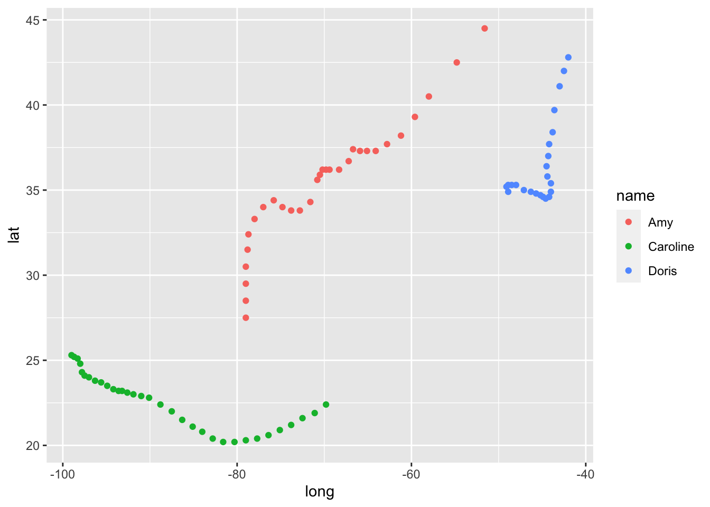
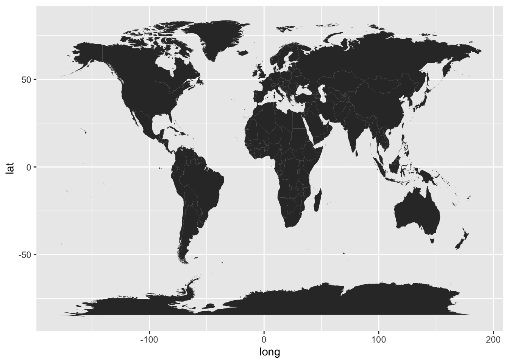
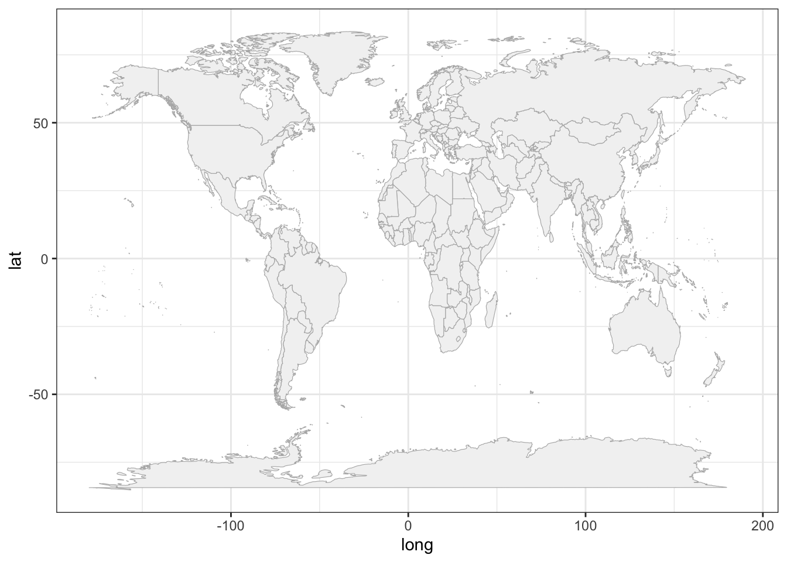
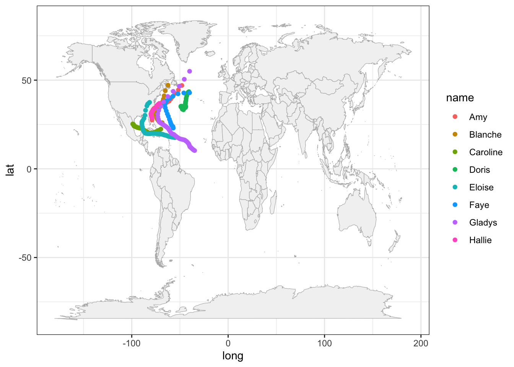
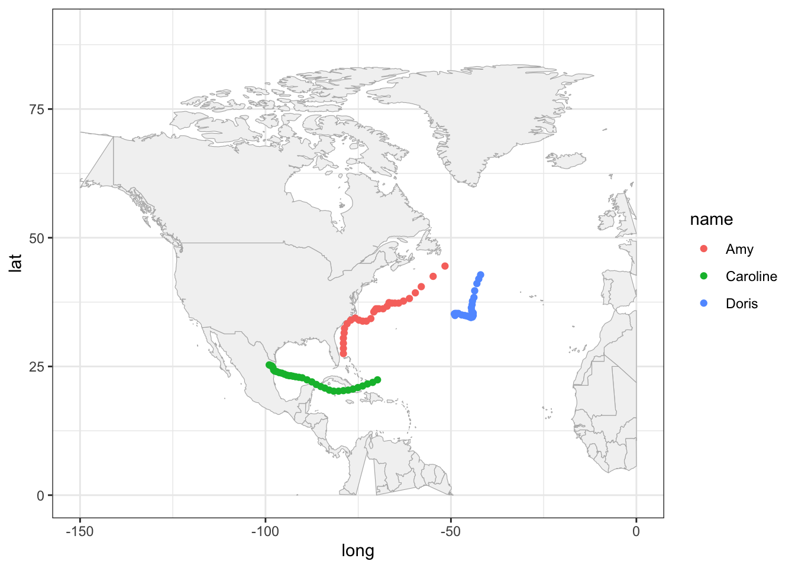
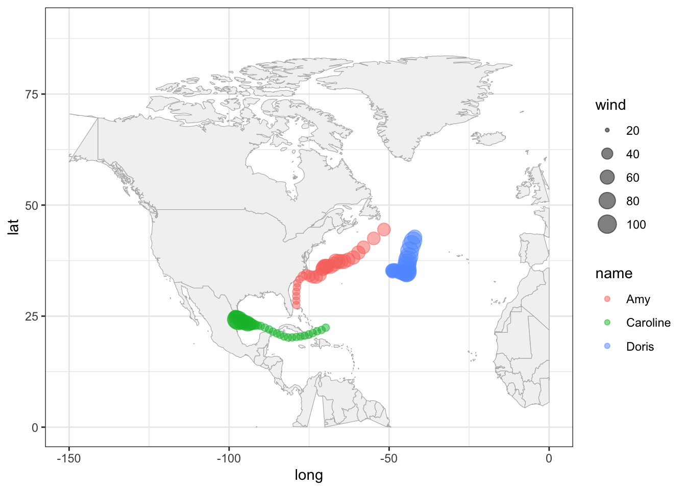
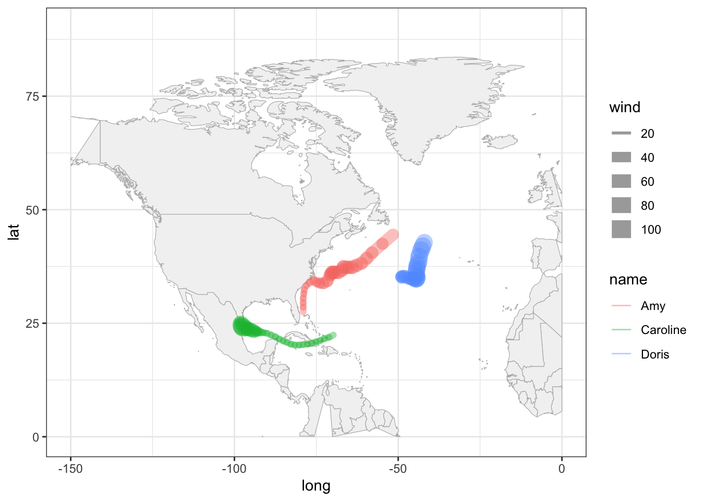

16 Basic Maps
In the previous chapters, you were introduced to the basics of "dplyr" and
"ggplot2", performing various operations on the data storms. Because this
data set contains geographical information such as longitude and latitude, we
need to take a further step in this module in order to learn about plotting
basic geographical maps.
You will need the following packages:
library(tidyverse) # for syntactic manipulation of tables
library(maps) # for drawing basic geographical mapsand the following objects:
storms75 <- filter(storms, year == 1975)16.1 Graphing Maps
In this part, we give a basic exposure to plotting maps with "ggplot2"
and "maps". Keep in mind that there is a wide array of packages for graphing
all sorts of maps, and geospatial information. Good resources to look at are:
Drawing beautiful maps programmatically with R, sf and ggplot2 by Mel Moreno and Mathieu Basille; https://www.r-spatial.org/r/2018/10/25/ggplot2-sf.html
Geocomputation with R by Robin Lovelace, Jakub Nowosad, and Jannes Muenchow; https://geocompr.robinlovelace.net
Making Maps with R by Eric C. Anderson; https://eriqande.github.io/rep-res-web/lectures/making-maps-with-R.html
16.1.1 Plotting location of storm records
For illustration purposes, we continue using the data frame storms75. Having
latitude and longitude, we can make a scatterplot to see the location of
the storm records. Recall that the ggplot function to do this is
geom_point(). To distinguish each storm, we can color the
dots by taking into account the different storm names. This involves mapping
the column name to the color attribute:
ggplot(data = storms75, aes(x = long, y = lat, color = name)) +
geom_point()
Keep in mind that the previous command can also be written as:
# alternative ways to write equivalent commands
ggplot(data = storms75) +
geom_point(aes(x = long, y = lat, color = name))
ggplot() +
geom_point(data = storms75, aes(x = long, y = lat, color = name))The above scatterplot is a good starting point to visualize the location of the storm records, but it would be nice to have an actual image of a map. Let’s see how to do this in the following subsections.
16.1.2 Basic map
One of the oldest ways to plot maps in R is with the package "maps". Nowadays,
there are better packages for geospatial data and making maps, but let’s not
worry about them at this moment.
One rudimentary way to plot a map is by first getting data of the world.
"ggplot2" provides the function map_data() to create the required data
table with geospatial information of a world map. All you have to do is specify
the name of the map provided by the "maps" package. In this example, let’s
use the "world" map. Once we have this data, we can use it with ggplot()
and a geom_polygon() layer like this:
# world map data
world_map <- map_data("world")
# a default world map
ggplot() +
geom_polygon(data = world_map,
aes(x = long, y = lat, group = group))
In the above command, notice how we specify the data argument inside
geom_polygon() instead of inside ggplot(). We do this because the data
frame world_map is used to graph the layer of the map. We still need to add
another layer—via geom_point()—for the coordinates indicating the
position of each storm’s record.
To handle the code more easily, let’s modify the map, and create a "ggplot"
object called gg_world. We’ll use this object as our “canvas” for plotting
the storm locations:
# map "canvas" stored as gg_world
gg_world <- ggplot() +
geom_polygon(data = world_map,
aes(x = long, y = lat, group = group),
fill = "gray95", colour = "gray70", size = 0.2) +
theme_bw()
gg_world
16.1.3 Mapping 1975 Storms
Now that we know how to plot a map with ggplot(), we can add the points of
the storm records. This is done with geom_point(), and specifying storms75
as the data argument inside this function. In other words, we are using two
separate data frames. One is world_map, used to draw the polygons of the map;
the other one is stomrs75 to graph the dots of each storm. Notice also that
there are no inputs provided to the function ggplot().
# world map, adding storms in 1975
gg_world +
geom_point(data = storms75,
aes(x = long, y = lat, color = name))
Because the analyzed hurricanes occurred in the North Atlantic basin, we can focus on that region by modifying the x-and-y axis limits:
# zoom-in
gg_world +
geom_point(data = storms75,
aes(x = long, y = lat, color = name)) +
xlim(c(-150, 0)) +
ylim(c(0, 90))
It’s worth mentioning that this zooming-in has a secondary effect of distorting
some of the polygons. For example, Alaska seems to get cut in half. Also the
polygon of Colombia is incomplete. Ignoring these distortions for now, we can
continue exploring things by taking into account more variables. For instance,
let’s map the wind speed to the size argument of points.
gg_world +
geom_point(data = storms75,
aes(x = long, y = lat, color = name, size = wind),
alpha = 0.5) +
xlim(c(-150, 0)) +
ylim(c(0, 90))
A very similar appearance can be achieved by replacing geom_point() with
geom_path():
gg_world +
geom_path(data = storms75,
aes(x = long, y = lat, color = name, size = wind),
lineend = "round", alpha = 0.4) +
xlim(c(-150, 0)) +
ylim(c(0, 90))